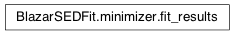

Module: minimizer¶
This module contains all the classes necessary to estimate the phenomenlogical characterization of the SED, such as spectral indices, peack frequenicies and fluxes
Classes and Inheritance Structure¶
Classes relations¶

fit_SED(fit_Model, SEDdata, nu_fit_start, …) |
function to run the minimization |
eval_SED |
|
residuals_SED |
Module API¶
-
BlazarSEDFit.minimizer.fit_SED(fit_Model, SEDdata, nu_fit_start, nu_fit_stop, fitname=None, fit_workplace=None, loglog=False, silent=False, get_conf_int=False, max_ev=0, use_facke_err=False)[source]¶ function to run the minimization
Parameters
Parameters: - SEDModel –
BlazarSEDFit.model.SEDmodelobject - SEDdata –
BlazarSEDFit.data_loader.ObsDataobject - nu_fit_start – (float) minimum value of the frequency fit range in Hz (logarithmic scale)
- nu_fit_stop – (float) maximum value of the frequency fit range in Hz (logarithmic scale)
- fitname – (str), optional, name for the fit
- workplace –
- components –
- template –
- template_func –
- template_scale –
- build_SEDModel –
- SEDModel –
-
class
BlazarSEDFit.minimizer.fit_results(name, parameters, info, mesg, success, chisq, dof, chisq_red, null_hyp_sig, wd)[source]¶ Bases:
objectClass to store the fit results
Parameters
Members :ivar fit_par: fit_par :ivar info: info :ivar mesg: mesg :ivar success: success :ivar chisq: chisq :ivar dof: dof :ivar chisq_red: chisq_red :ivar null_hyp_sig: null_hyp_sig :ivar fit_report: ivar get_report() ——-